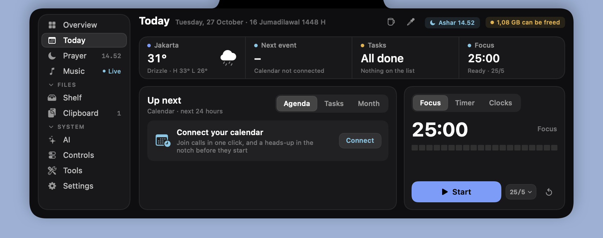
Today
Weather, next event with Join for 19 call services, tasks, and a focus timer.
A notch dashboard on Mac, a notch-style island on Windows. System stats, your next meeting, prayer times, AI usage, clipboard history and synced lyrics, one hover away.
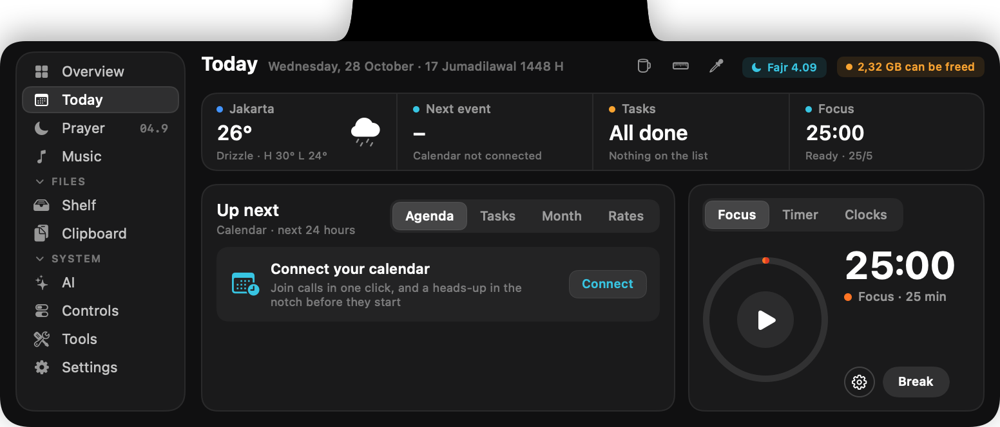
Everything you'd open three apps for, folded into the black strip you were ignoring.

Weather, next event with Join for 19 call services, tasks, and a focus timer.
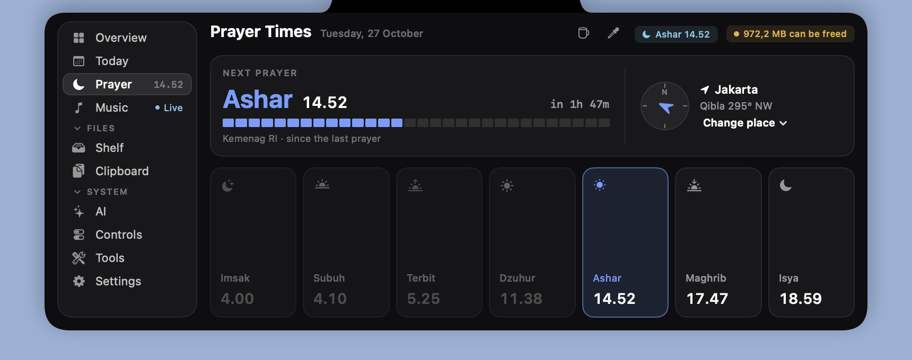
Kemenag, MWL, Umm al-Qura. Hijri date, qibla compass, Ramadan mode.
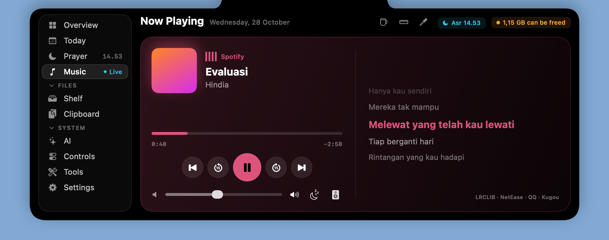
Any player, YouTube included. Synced lyrics, sleep timer, output picker.
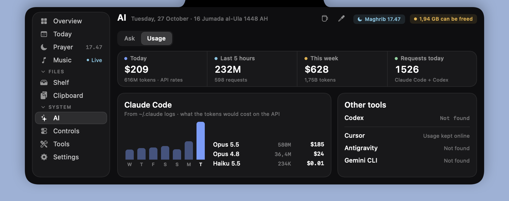
Claude Code and Codex, read from local logs: tokens, API cost, rate limits.
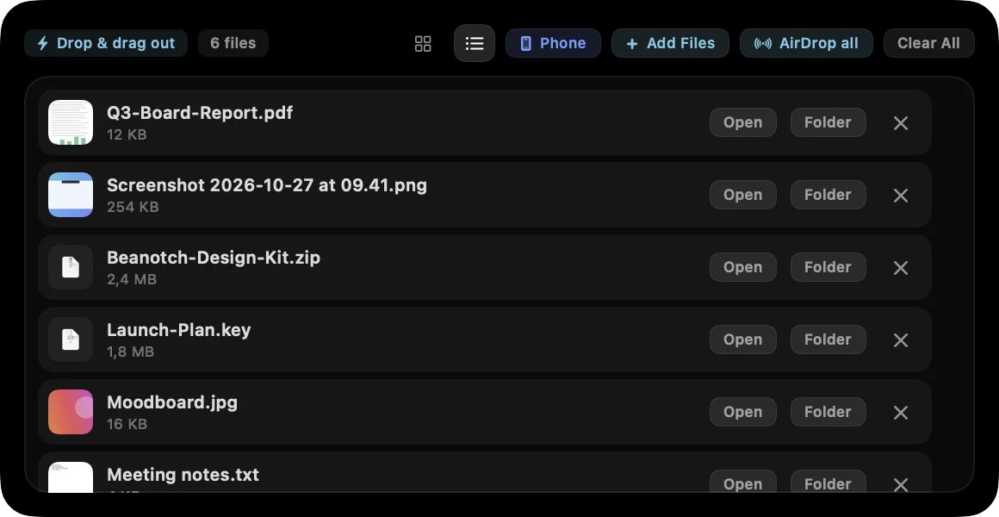
Drop files on the notch, drag them out later. Right third sends by AirDrop. Screenshots land here.
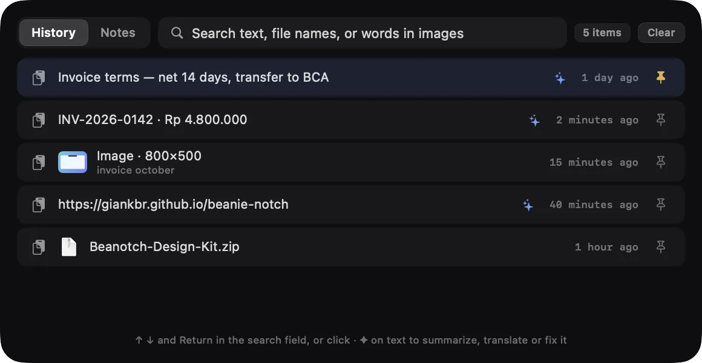
Text, image and file history with fuzzy search and on-device OCR. Passwords are skipped.
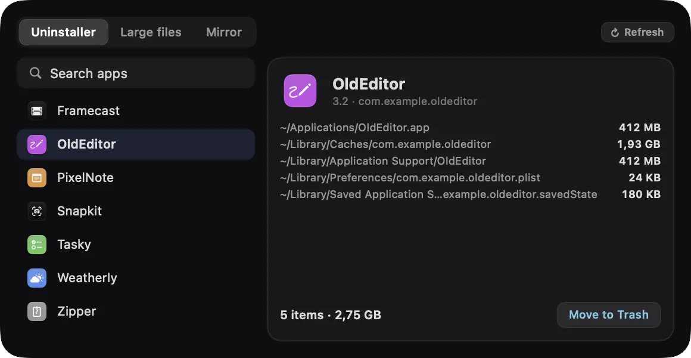
An uninstaller that finds the leftovers, a large-file finder and a camera mirror. Nothing is recorded.
The notch on Mac, or the island on Windows, grows just enough to show what matters right now, then tucks itself away again.
Synced lyrics while music plays, or a mini player.
Levels as you change them. Scroll on the notch for volume.
Live progress, and a note when the file lands.
Focus and countdown timers, always in view.
Unread counts and short notices from your apps.
Charge for each bud and the case when they connect.
A countdown before each prayer, calculated on your Mac.
Charging, Caps Lock, screenshots, eye breaks, Shortcuts results and Ramadan imsak alerts, as short notices.
A pet that lives in the notch, a heads-up when a long command finishes, and copied text that turns into something useful.
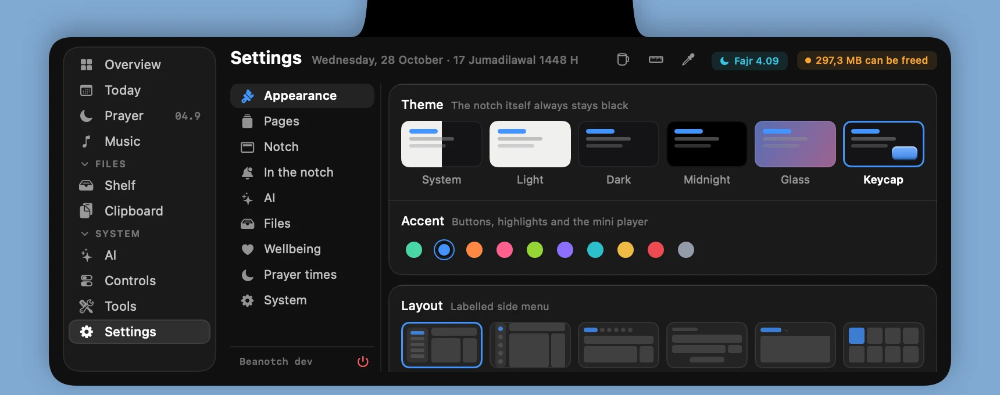
Buttons, switches and tabs drawn as raised keys, or 8-bit like the pet. Joins Dark, now true black like the notch, and Glass, which lets the desktop through.
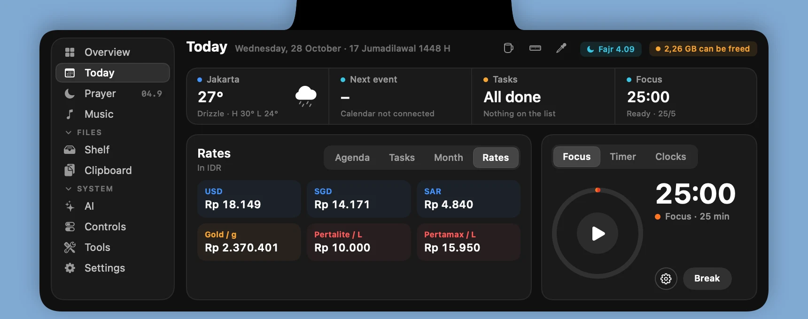
Currencies you watch, gold per gram and, in Indonesia, Pertamina fuel prices for your province. No API keys.
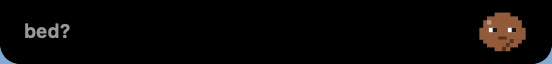
Bean, Cat, Frog or Ghost. Its eyes follow your pointer, it sweats when the CPU is busy and asks "bed?" after midnight.
Put beanotch run before a slow command. The notch counts the time and tells you when it passes or fails.
Copy a message with a one-time code and only the code lands on the clipboard. Parcels and addresses get a shortcut too.
Copy a price in any currency and see it in yours, at today's rate.
While the mic or camera is on, alerts wait and a mute button sits in the panel. The held alerts play when you hang up.
In Indonesia, BMKG's latest felt quake and how far it is from you. Ramadan adds imsak and iftar alerts.
Drag across the screen to measure it, or pick any pixel's color. Both copy the result.
A new version shows up once in the notch. Click it and Beanotch installs the update.
Rain, waves or brown noise while you focus. Drop a file on Ask AI to summarize or translate it. Open Shelf files from your phone.
Small, native on both platforms, and polite about permissions.
Swift and SwiftUI on the Mac, C# and WinUI 3 on Windows, with no third-party dependencies. A 3 MB universal Mac app that idles near 0% CPU.
Prayer times are worked out on the Mac. No analytics, no tracking, no API keys.
Calendars, Location, Camera — macOS prompts the first time a feature actually needs access.
The global shortcut is a Carbon hot key, so ⌥ Space works without handing over input control.
Brightness, Night Shift and DDC load at run time. Missing symbols just switch that feature off.
A new version shows up in the notch once. Click it and Beanotch installs the update and reopens.
Layouts, themes, accents, sizes and notch shapes. Every choice previews live, right where it will sit. Try it here: this page follows along.
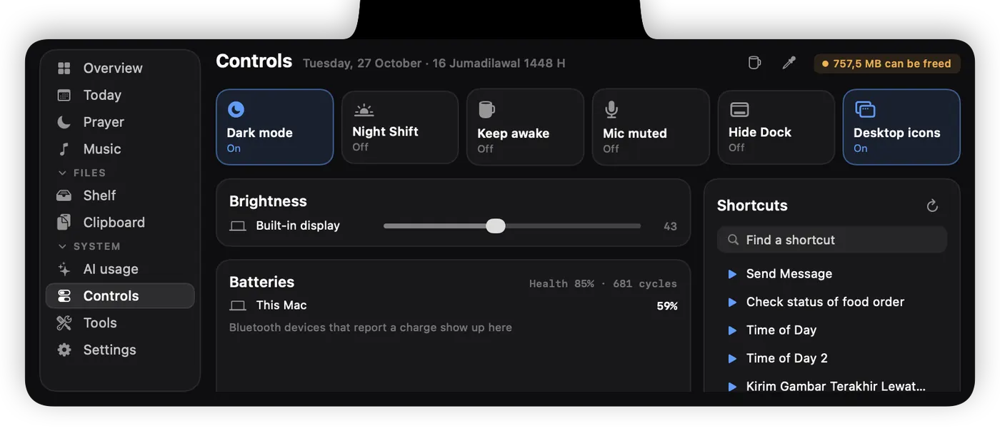
Built natively for each, not ported. Most panels work the same on both; a few things only one system allows.
Beanotch is free, open and tiny. If something isn't covered here, open an issue on GitHub.
Yes, in beta for Windows 10 and 11: a notch-style island at the top centre of the screen with the same pages as on the Mac, built with WinUI 3. Download it here. Most PCs need the regular (x64) installer; Snapdragon PCs get the ARM64 one, which the button picks for you.
Turn on Settings › AI › Terminal commands and Beanotch adds a small beanotch command. Run beanotch run npm test (or any command): the notch shows it running, then whether it passed and how long it took. It talks to the app over localhost only. Windows has the same command.
Yes. On Macs without a notch, Beanotch draws a notch-like strip at the top centre of the screen. Pick the floating shape in Settings if you prefer it detached.
Beanotch is ad-hoc signed, not notarized. Right-click the app and choose Open once, or run xattr -dr com.apple.quarantine /Applications/Beanotch.app.
Prayer times are worked out on your Mac. For the weather, only your place's coordinates go to Open-Meteo, with no account, no key and no tracking. Lyrics lookups send just the song title and artist.
Only for Messages, to read the unread badges on Dock icons (just the numbers). Everything else, including the ⌥ Space shortcut, works without it.
Yes. Beanotch is a universal app for Apple silicon and Intel on macOS 14 or later. Brightness for external monitors over DDC works on Apple silicon only.
Open source, no account, no tracking. Install takes under a minute.
Drag Beanotch into Applications.
Not notarized yet: right-click › Open once.
Or press ⌥ Space. That's it.
xattr -dr com.apple.quarantine /Applications/Beanotch.appInstalls for you only, no admin prompt.
Not signed yet: More info › Run anyway.
It sits at the top centre of the screen.
Snapdragon PC? Pick ARM. Every other PC uses the first button.It's free and made by one person. If it saves you a few clicks a day, a tip or a kind word keeps the beans roasting.